Cojínes de Lactancia ABeCe
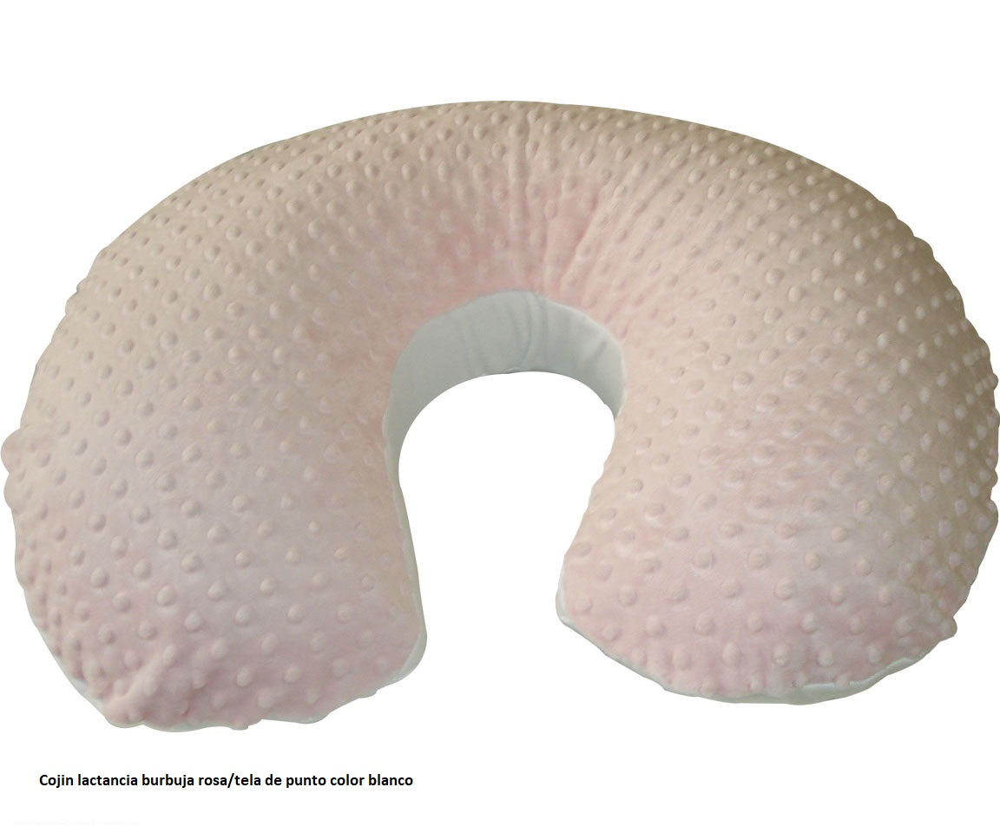
Cojínes de Lactancia/T.Burbuja
46 x 56 x 20 cm
Color/Textura: Rosa Burbuja
$832 MXN
- Soporte ergonómico: Favorece una postura cómoda y natural durante la alimentación.
- Diseño envolvente: Reduce la tensión en espalda, cuello y brazos de la mamá.
- Máximo confort: Funcionalidad estética ideal para el binomio madre e hijo.
- Etapa 1 (0 a 3 meses): Soporte ergonómico durante la alimentación.
- Etapa 2 (3 a 6 meses): Apoyo supervisado para el descanso seguro del bebé.
- Etapa 3 (6 meses en adelante): Soporte de ayuda para aprender a sentarse con supervisión.
Descripción: Funda con cierre y cojín forrado con tela Spunbond (repelente).
Tela: 90% Algodón, 10% Poliéster. Relleno de Fibra Siliconisada suave.
Lavado: Lavar funda en ciclo delicado. No usar secadora ni blanqueadores.
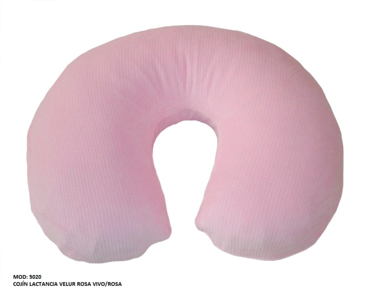
Cojines de Lactancia Velur
46 x 56 x 20 cm
Color/Textura: Rosa Velur
$832 MXN
- Textura Ultra-Suave: Acabado satinado tipo velur que brinda una sensación térmica reconfortante al tacto del bebé.
- Ergonomía certificada: Mantiene su firmeza ideal previniendo tensiones musculares en cuello y hombros.
- Estética elegante: Un modelo de alta gama que combina perfectamente con los interiores modernos del hogar.
- Etapa 1 (0 a 4 meses): Aliado ergonómico premium para lactancia materna o tetero.
- Etapa 2 (4 a 6 meses): Cojín nido antideslizante para siestas supervisadas del recién nacido.
- Etapa 3 (6 meses en adelante): Barrera protectora de ayuda para el desarrollo del gateo y equilibrio.
Descripción: Funda desmontable con costura invisible y cierre de seguridad oculto.
Tela exterior: 100% Velur Premium hipoalergénico. Forro interior de microfibra repelente.
Lavado: Funda lavable a máquina en agua fría. No usar plancha para conservar el brillo del velur.
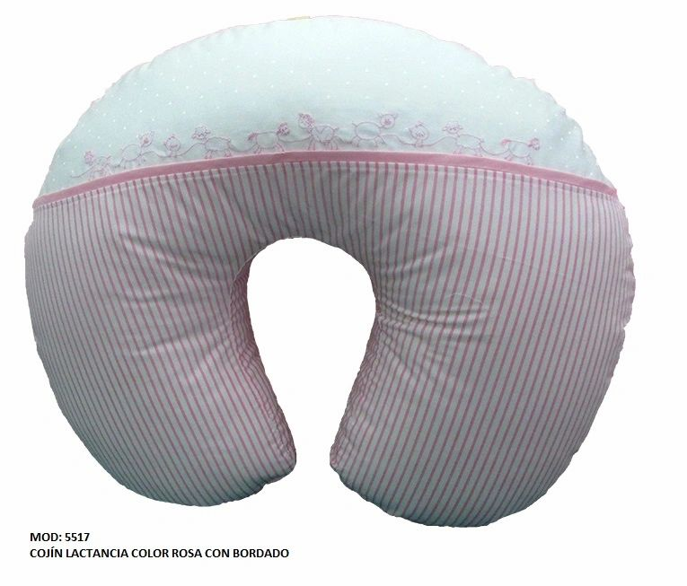
Cojines de Lactancia Bordados
46 x 56 x 20 cm
Color/Textura: Rosa Bordado
$832 MXN
- Detalles artesanales: Bordados finos y suaves con hilos de algodón que no irritan la piel del lactante.
- Soporte anatómico riguroso: Distribuye el peso del bebé de forma equitativa liberando la carga lumbar.
- Identidad única: Una pieza delicada que destaca por su tradición textil y acabado artesanal.
- Etapa 1 (0 a 3 meses): Posicionamiento idóneo del binomio madre-hijo para un acople correcto.
- Etapa 2 (3 a 6 meses): Soporte de ayuda para estimular el control del torso del bebé boca abajo.
- Etapa 3 (6 meses en adelante): Cojín de contención tipo nido para sus horas de juego y risas.
Descripción: Funda de algodón con bordado frontal de alta densidad y cojín repelente.
Tela base: 100% Algodón Pima orgánico. Relleno de Delcron siliconado indeformable.
Lavado: Se recomienda lavar la funda al revés o dentro de una malla protectora para cuidar los hilos.
Productos
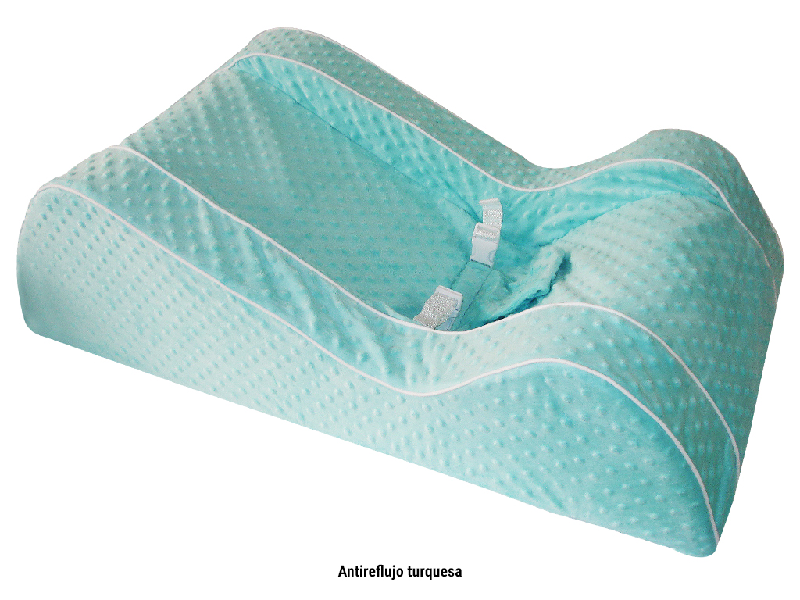
Sillón Colchón Antirreflujo
86.5 x 44.5 x 27.5 cm
Color/Textura: Azul Turquesa
$2,529 MXN
- Mayor Confort Médico: Eleva al bebé 30 grados, inclinación recomendada por pediatras para mitigar problemas de reflujo, cólicos, gases, resfriados, taponamiento e infecciones de oído.
- Versatilidad en el Hogar: Es ideal para la alimentación con biberón, tiempo de juego o simplemente si tu bebé necesita un cómodo lugar para descansar.
- Ergonomía Segura: Diseñado para mantener una postura anatómica óptima que favorece la digestión y el bienestar continuo del recién nacido.
- Seguridad del Lactante: Para bebés que aún no se pueden sentar por sí mismos, utilícelo de forma segura para dormir, alimentar y jugar.
- Sujeción Firme: Siempre asegure el arnés al velcro y ajuste correctamente el cinturón de seguridad incorporado. Por ningún motivo deje al bebé sin supervisión.
- Entorno Despejado: No lo coloque dentro de la cuna o cerca de superficies verticales, y evite agregar mantas, toallas u otros objetos blandos que puedan cubrir su rostro.
Colchón Base: Núcleo de Espuma Dimensionada Firme 16/18 S/F (1 Pza) de alta densidad.
Funda Removible: Tejido de Burbuja 100% Poliéster con revestimiento impermeable que protege la espuma para mayor longevidad (1 Pza).
Instrucciones de Lavado: Lavar la funda en lavadora en ciclo delicado. No usar blanqueadores. No usar secadora para conservar el textil.
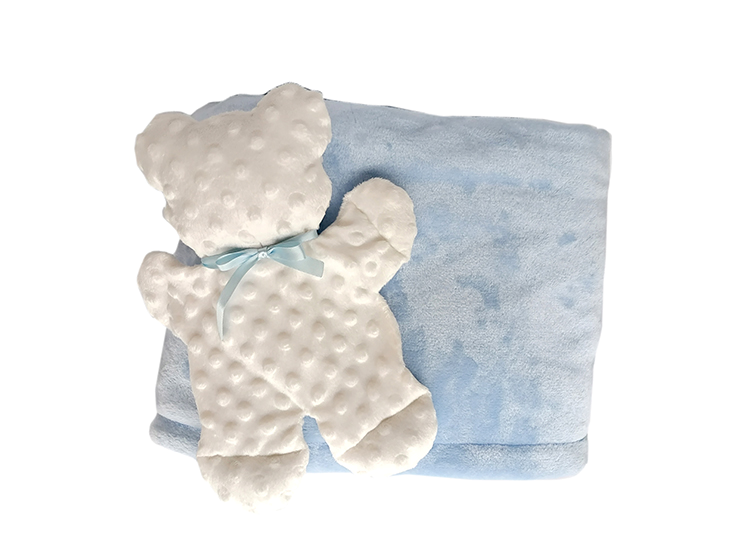
Cobija Rusia Doble Tela
Incluye oso de apego
Color/Textura: Azul
$310 MXN
- Suavidad y cercanía a la piel: Manta delgada de materiales ultra suaves y ligeros, brindando un cálido abrazo de mamá y comodidad incomparable al bebé.
- Transpirable y Absorbente: Excelente capacidad de absorción altamente transpirable, ideal para mantener al bebé fresco y seco en todo momento.
- Ideal para actividades al aire libre: Una opción ligera, portátil y delgada, perfecta para llevar de paseo y disfrutar al aire libre en cualquier momento.
- Uso Versátil: Su tamaño ideal de 80 × 140 cm la hace perfecta para usarse de forma adaptable en el cochecito, la cuna o como capa extra de abrigo.
- Fácil Transporte: Su diseño delgado, liviano y compacto permite transportarla y almacenarla en la pañalera sin batallar ni ocupar espacio excesivo.
- Estimulación Sensorial: Incluye un oso de apego de 30 × 30 cm con diseño de puntos en relieve que proporciona mayor tacto al bebé a medida que crece.
Descripción detallada: Cobija Doble Tela con Oso de Apego color blanco.
Composición Textil: 100% Poliéster Premium de Nivel de Confort: Suave.
Medidas del Oso: Textura con puntos en relieve de dimensiones: 30 × 30 cms.
Instrucciones de Cuidado: Lavar en lavadora en ciclo delicado. No usar secadora. No usar blanqueadores.
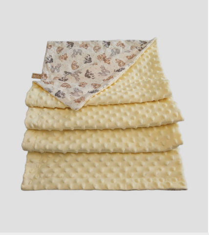
Cobija Burbuja Estampado Tela
Estampado de animalitos
Color/Textura: Amarillo
$310 MXN
- Suavidad y cercanía a la piel: Manta delgada de materiales ultra suaves y ligeros, brindando un cálido abrazo de mamá y comodidad incomparable al bebé.
- Transpirable y Absorbente: Excelente capacidad de absorción altamente transpirable, ideal para mantener al bebé fresco y seco en todo momento.
- Ideal para actividades al aire libre: Una opción ligera, portátil y delgada, perfecta para llevar de paseo y disfrutar al aire libre en cualquier momento.
- Uso Versátil: Su tamaño ideal de 80 × 140 cm la hace perfecta para usarse de forma adaptable en el cochecito, la cuna o como capa extra de abrigo.
- Fácil Transporte: Su diseño delgado, liviano y compacto permite transportarla y almacenarla en la pañalera sin batallar ni ocupar espacio excesivo.
- Estampado Divertido: Diseño con estampado de animalitos que estimula visualmente al bebé desde sus primeros meses.
Descripción detallada: Cobija Burbuja con estampado de animalitos.
Composición Textil: 100% Poliéster Premium de Nivel de Confort: Suave.
Instrucciones de Cuidado: Lavar en lavadora en ciclo delicado. No usar secadora. No usar blanqueadores.
Productos
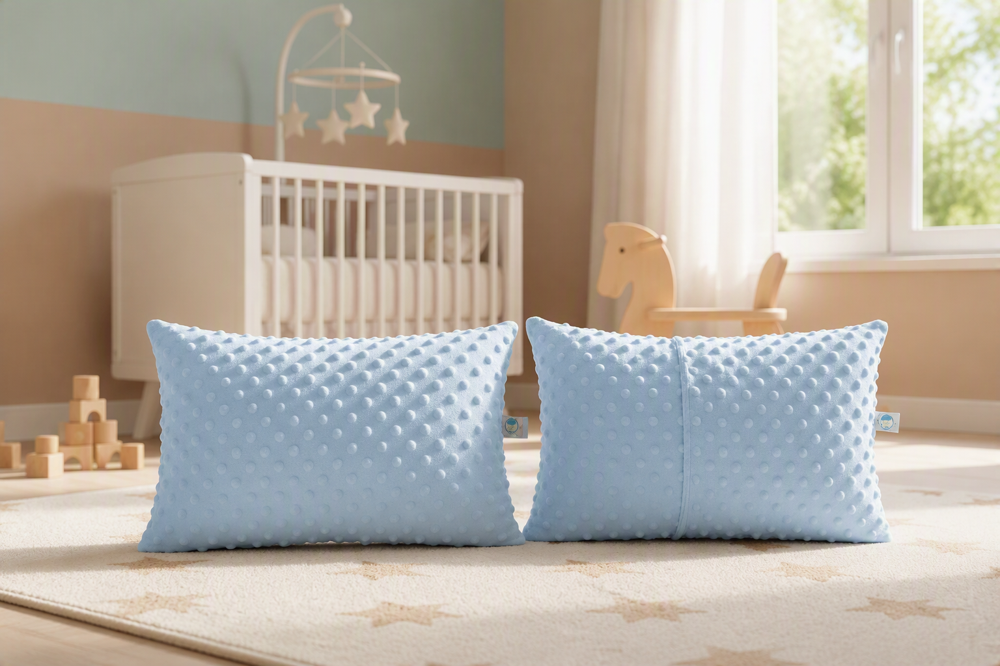
almohada con funda burbuja
30x20
Color/Textura: Azul
$170 MXN
- Almohada burbuja ABeCe para bebe: con tela en relieve para mayor tacto, color(azul, Rosa y Amarillo. Súper suave y diseño sólido. SKU: 45061132 Model: 3041
- Beneficio: Descripción pendiente.
- Beneficio: Descripción pendiente.
- para ,uso diario: Colección: Almohadas Espacio: Recámara Nivel de Confort: Super Suave
- Uso: Descripción pendiente.
- Uso: Descripción pendiente.
Descripción detallada: Relleno: Fibra siliconada Colección: Almohadas Espacio: Recámara Nivel de Confort: Super Suave
Composición Textil: :Burbuja 100% Poliester/Tela A Rayas Poliester algodón/relleno de fibra siliconada
Instrucciones de Cuidado: Lavar en ciclo delicado, jabón Neutro , no usar secadora.
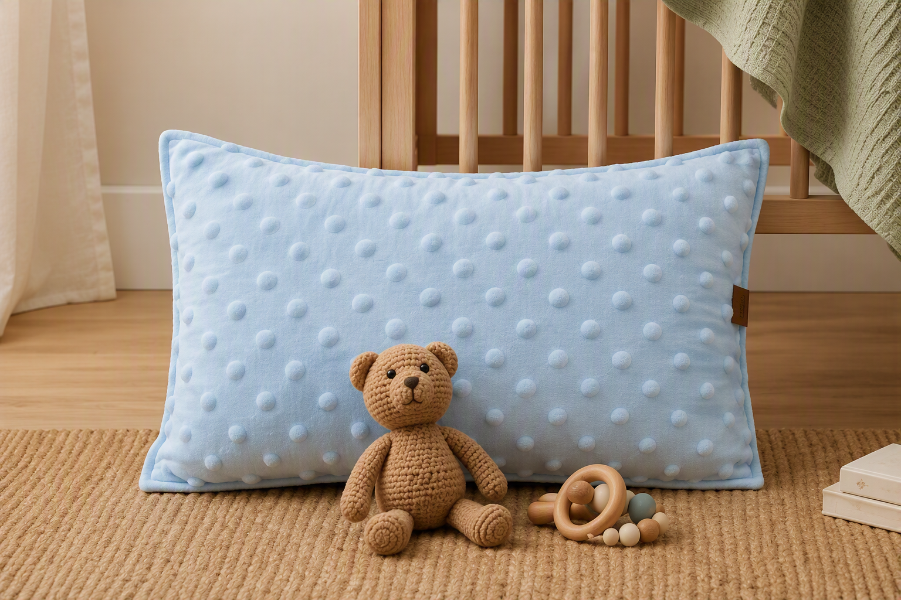
Almohada Burbuja Tela
30x20
Color/Textura: Azul
$250 MXN
- Almohada Doble Vista: Nivel de Confort (suave)
- Beneficio: Descripción pendiente.
- Beneficio: Descripción pendiente.
- Uso Diario: Almohada Doble Vista y Nivel de Confort (suave)
- Uso: Descripción pendiente.
- Uso: Descripción pendiente.
Descripción detallada: Almohada Doble Vista y Nivel de Confort (suave) Lavar en ciclo delicado, jabón Neutro , no usar secadora.
Composición Textil: :Burbuja 100% Poliéster/Tela A Rayas Poliéster algodón
Instrucciones de Cuidado: Lavar en ciclo delicado, jabón Neutro , no usar secadora.
Colchón cambiador Curvo Funda capitoneada
Largo 82cm Ancho 44cm Espesor de 7 cms.
Color/Textura: Blanco
$950 MXN
- Colchón cambiador ABeCe Curvo: Colchón cambiador ABeCe para bebé, diseño curvo; elaborado en material sintético color blanco; colocar sobre superficies planas...
- Beneficio: Descripción pendiente.
- Beneficio: Descripción pendiente.
- Uso Diario: del mes 0 a 12 meses, y colocar sobre superficies planas al momento de usarlo
- Uso: Descripción pendiente.
- Uso: Descripción pendiente.
Descripción detallada: Hule Espuma Funda Capitoneada
Composición Textil: Espuma Poliuretano Dimensionado Firme 16/18 S/F, Funda 65 % poliester 35% Algodón
Instrucciones de Cuidado: Limpiar con trapo húmedo y jabón neutro, colocar sobre superficies planas
Productos
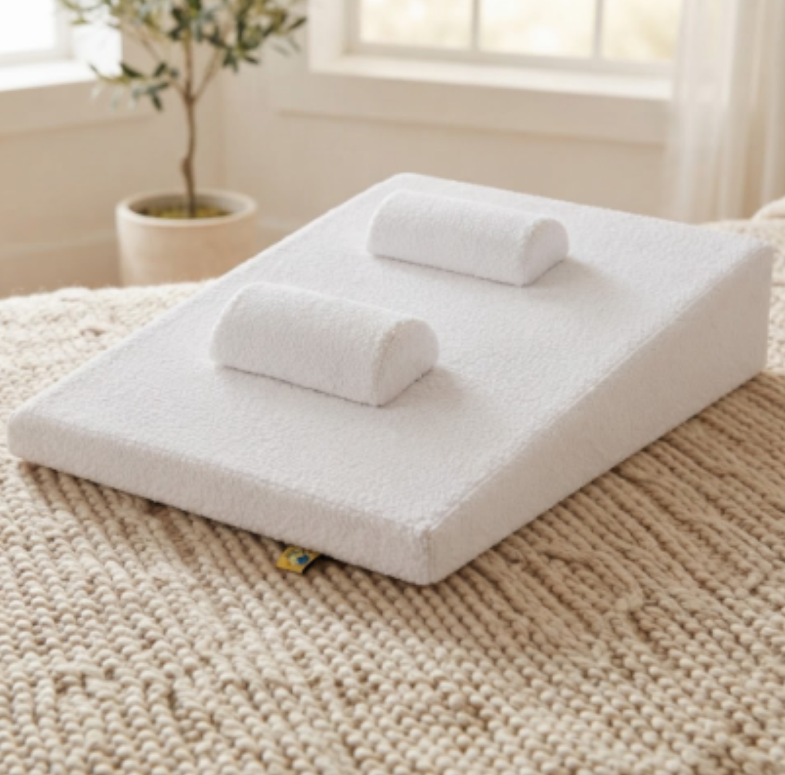
Colchón cuña antirreflujo para bebe forro toalla
Largo 61 cm Ancho 39 cm Espesor de 11 cm
Color/Textura: Blanco
$700 MXN
- Colchón Antirreflujo Cuña C/Funda Toalla 100% Algodón: Hule Espuma ,Cilindros Largo .20 Ancho .10 Espesor 7.5 cms y Funda de Toalla 100% Algodón
- Beneficio: Descripción pendiente.
- Beneficio: Descripción pendiente.
- Uso Diario: No acostar al niño después de comer. Se recomienda cargarlo por unos minutos para que pase el efecto del reflujo
- Versatil: Colchon Antirreflujo C/Funda toalla 100% Algodon Color Bco. Para mayor seguriudad del bebe ( Con revestimiento Impermeable que protege la espuma para mayor logenvidad) ; Cilindros Antivuelco ajustables a la posición del bebé mediante velcro; Ideal para recién nacidos y hasta 8 meses de edad
- Uso: Descripción pendiente.
Descripción detallada: Hule Espuma ,Cilindros Largo .20 Ancho .10 Espesor 7.5 cms y Funda de Toalla 100% Algodón
Composición Textil: Colchón Antirreflujo C/Funda Toalla 100% Algodón
Instrucciones de Cuidado: Funda Lavar lavadora ciclo delicado Usar jabón neutro No usar cloro No planchar No Usar secadora
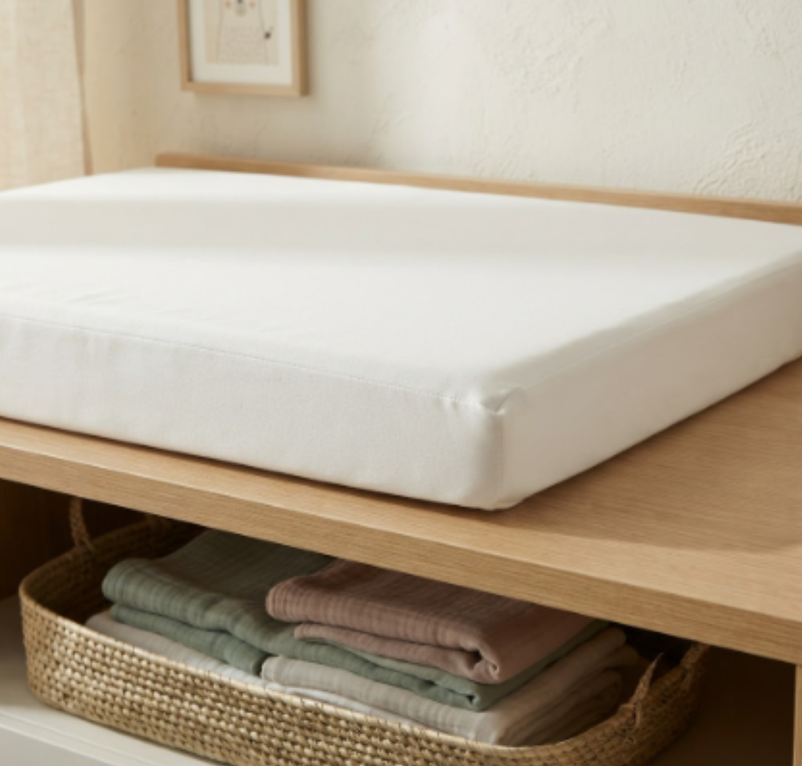
Colchón para cuna viajera Memory Form Con tela repelente
Largo 100 cm Ancho 67 cm Espesor de 5 cm
Color/Textura: Blanco
$950 MXN
- Suave y alto confort para viajes en familia: funda blanca color blanco repelente a fluidos para mayor longevidad
- transpirable: funda repelente al agua
- facil de transportar: cochon hule espuma con memory form facil de transportar
- uso Diario: se puede usar desde 0 mes y hasta 12meses
- Uso: Descripción pendiente.
- Uso: Descripción pendiente.
Descripción detallada: Hule Espuma Funda C/Cierre
Composición Textil: Composición. Tela 68% Poliéster 32% Algodón
Instrucciones de Cuidado: Lavar lavadora ciclo delicado Usar jabón neutro No usar cloro No planchar No Usar secadora
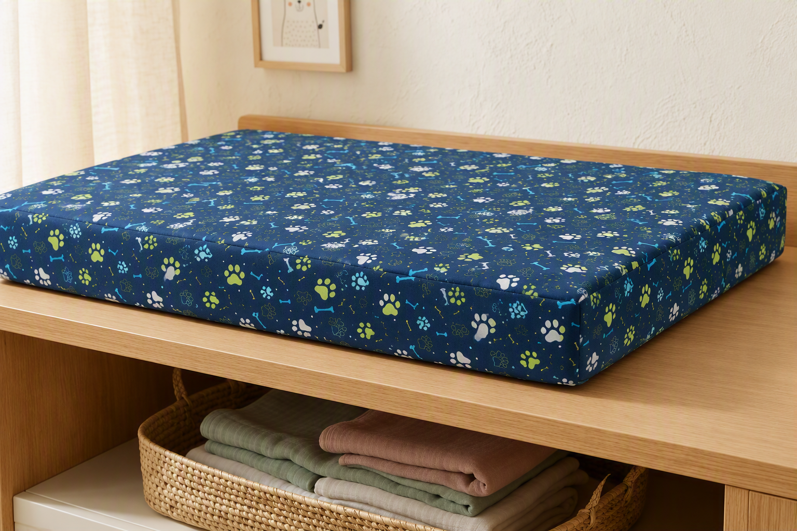
Colchón para cuna viajera Memory Form Con tela repelente Estampada
Largo 100 cm Ancho 67 cm Espesor 5 cm
Color/Textura: Azul-Niño
$950 MXN
- Colchón cuna viajera estampada: Funda con cierre , estampada repelente a fluidos para mayor longevidad
- transpirable: repelente al agua
- fácil de transportar: hule espuma con memory form
- uso diario: se puede usar desde el mes 0 y hasta 12 meses
- versatilidad: se puede transportar si se llega a salir de casa
- confort: confort para su uso y suavidad que se transmite al bebe
Descripción detallada: Hule Espuma Funda C/Ciere Tela Impermeable que protege la espuma para mayor longevidad
Composición Textil: Composición. Tela Poliester Algodón
Instrucciones de Cuidado: Lavar lavadora ciclo delicado Usar jabón neutro No usar cloro No planchar No Usar secadora
ABeCe
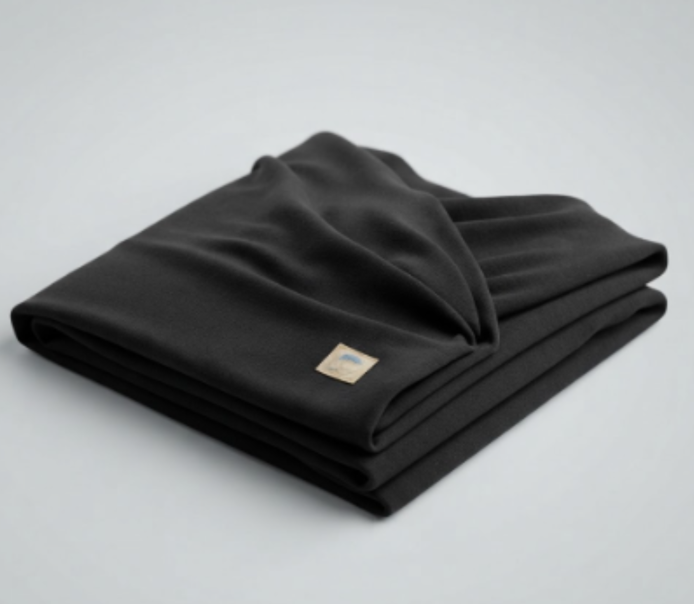
Fular Para porteo Canguro Rebozo Porta bebes Ergonomico
largo 5mts x 45 cm
Color/Textura: Negro
$600 MXN
- Diseño Híbrido Innovador: Al combinar las ventajas de un fular tradicional y una bandolera, brinda un ajuste óptimo, firme y muy rápido de colocar en el día a día.
- Práctico Bolsillo Central: Incorpora un compartimento integrado en el centro de la prenda para tener siempre a la mano objetos pequeños esenciales como toallitas o llaves.
- Conexión y Confort: Favorece el apego seguro manteniendo al bebé cerca del pecho materno o paterno, propiciando la calma mientras mantienes las manos libres.
- Porteo Ergonómico Seguro: Ofrece una solución de transporte que respeta la postura natural del bebé, distribuyendo el peso de manera uniforme para evitar dolores de espalda en los padres.
- Amplio Rango de Crecimiento: Diseñado para acompañar el desarrollo de tu hijo, con una edad recomendada que va desde los 0 hasta los 24 meses (apto para soportar un peso de 1 a 15 kilos).
- Diversas Posiciones: Su estructura híbrida tipo bandolera permite acomodar al bebé en distintas posturas de porteo según su etapa de crecimiento y necesidades de descanso.
Descripción detallada: Fular para Porteo Ergonómico (Modelo 1708), diseñado como una versátil combinación entre fular y bandolera. Cuenta con un práctico bolsillo al centro y tiene unas medidas ideales de 5 metros de largo por 45 centímetros de ancho.
Composición Textil: Algodón Ergonómico de Alta Resistencia (Textura suave y flexible para el correcto soporte del bebé).
Instrucciones de Cuidado: Lavar en lavadora en ciclo delicado. Plancha tibia si es necesario. NO USAR SECADORA Y NO UTILIZAR BLANQUEADORES.
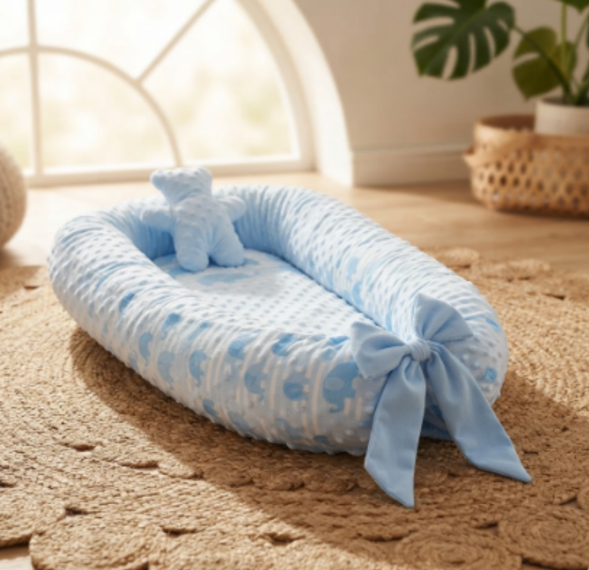
Nido Contención Azul
Largo 84cm x Ancho 50cm x 15 ms
Color/Textura: Azul
$900 MXN
- Nivel Confort Suave: Su confección con tela suave tipo minky garantiza un entorno sumamente acogedor y acolchado, ideal para cuidar la delicada piel del recién nacido.
- Fácil de Lavar y Mantener: Diseñado para la practicidad del día a día; la funda cuenta con cierre y los rellenos del borde y colchón son totalmente removibles para una limpieza rápida.
- Espacio Higiénico y Seguro: Al permitir desmontar e higienizar cada elemento de forma independiente, asegura un entorno óptimo, saludable y libre de alérgenos para el bebé.
- Nido de Contención: Ofrece un espacio acotado y seguro que emula el vientre materno, ideal para el descanso supervisado, siestas y momentos de relajación del bebé.
- Práctico y Versátil: Su diseño ligero permite moverlo fácilmente por la casa para mantener al bebé cerca, y viene acompañado de un oso de apego que le brinda seguridad emocional.
- Colchón Doble Vista: Incluye un colchón reversible que te permite usarlo por ambos lados según tu preferencia, extendiendo el tiempo de uso y combinaciones.
Descripción detallada: Nido de Contención en color azul con diseño de doble vista. El set de 3 piezas incluye 1 nido con funda con cierre, 1 colchón reversible (doble vista) y 1 tierno oso de apego tipo burbuja en color azul. Medidas: Largo 84 x Ancho 50 cm.
Composición Textil: Mezcla premium de Poliéster y Algodón (con tela suave tipo minky).
Instrucciones de Cuidado: Para la funda: Use lavadora en ciclo delicado con agua tibia y jabón neutro. NO USAR SECADORA.
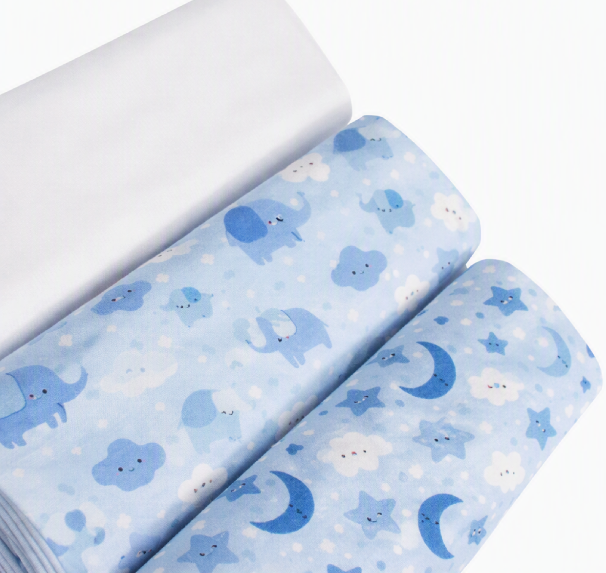
Set de 3 Sabanitas Sabanitas Recibidoras
75cm x 100 cm
Color/Textura: Azul
$400 MXN
- Nivel Suave: Ofrece un confort sumamente agradable al tacto, pensado especialmente para respetar y proteger la delicada piel del bebé sin causar rozaduras.
- Elasticidad y Frescura: Elaborado con una mezcla premium de algodón y spandex que proporciona una ligera elasticidad para envolver al bebé de forma cómoda y ergonómica.
- Diseños dinámicos: Incluye una variedad de tiernos estampados en tonos azules que aportan versatilidad visual y una estética infantil moderna a los accesorios del bebé.
- Sabanita Recibidora: Un elemento esencial para arrullar, envolver o recibir al niño recién nacido, proporcionándole un entorno seguro y una agradable calidez.
- Uso diario y versátil: Ideales para cubrir el cochecito, usar como cambiador improvisado o proteger al bebé de las corrientes de aire durante sus salidas cotidianas.
- Práctico Set de 3 piezas: Ofrece tres opciones funcionales que garantizan tener siempre una pieza de repuesto limpia ante los imprevistos o derrames comunes del día a día.
Descripción detallada: Práctico Set de 3 Sabanitas Recibidoras en color azul con diferentes estampados (diseños variables), diseñadas con una medida ideal de .75 x 100 cm. para el cuidado del bebé.
Composición Textil: Tela de Punto con Algodón y Spandex
Instrucciones de Cuidado: Use lavadora en ciclo delicado, con agua fría y jabón neutro. No usar blanqueadores.
ABeCe
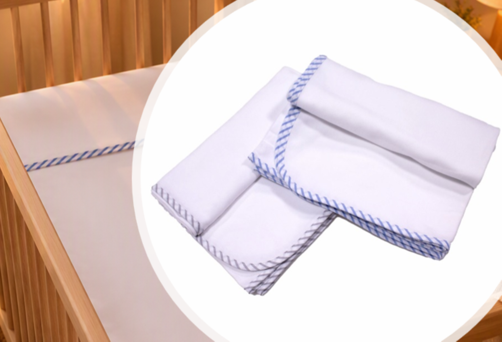
Sabanitas Recibidoras
75cm x 100 cm.
Color/Textura: Azul-gris
$500 MXN
- Nivel Super Suave: Ofrece un nivel de confort ultra suave al tacto, ideal y sumamente amigable para cuidar la delicada piel del recién nacido.
- 100% Algodón: Fabricado íntegramente en tela de punto de algodón, un material natural altamente transpirable que evita acumulaciones de calor.
- Lindos detalles y acabados: Cuenta con una hermosa vista a rayas alrededor de la prenda, aportando un diseño tierno, estético y moderno.
- Sabanita Recibidora: Diseñada especialmente para arrullar, cubrir y recibir al bebé desde sus primeros días de nacido, brindándole protección.
- Uso diario: Ideal para el día a día en casa o durante paseos, manteniendo al bebé fresco y cómodo gracias a su confección de alta calidad.
- Práctico Set de 2: Incluye dos piezas combinables en tonos Gris y Rosa a rayas, permitiendo tener siempre un repuesto limpio a la mano.
Descripción detallada: Set de 2 Sabanitas Recibidoras (1 con detalle Rosa a rayas y 2 con detalle Gris a rayas). Medidas de .75 x 100 cm. ideales para el confort de tu bebé.
Composición Textil: Tela de Pto. 100% Algodón
Instrucciones de Cuidado: Use lavadora en ciclo delicado, con agua fría y jabón neutro. No usar blanqueadores. Plancha tibia si es necesario.
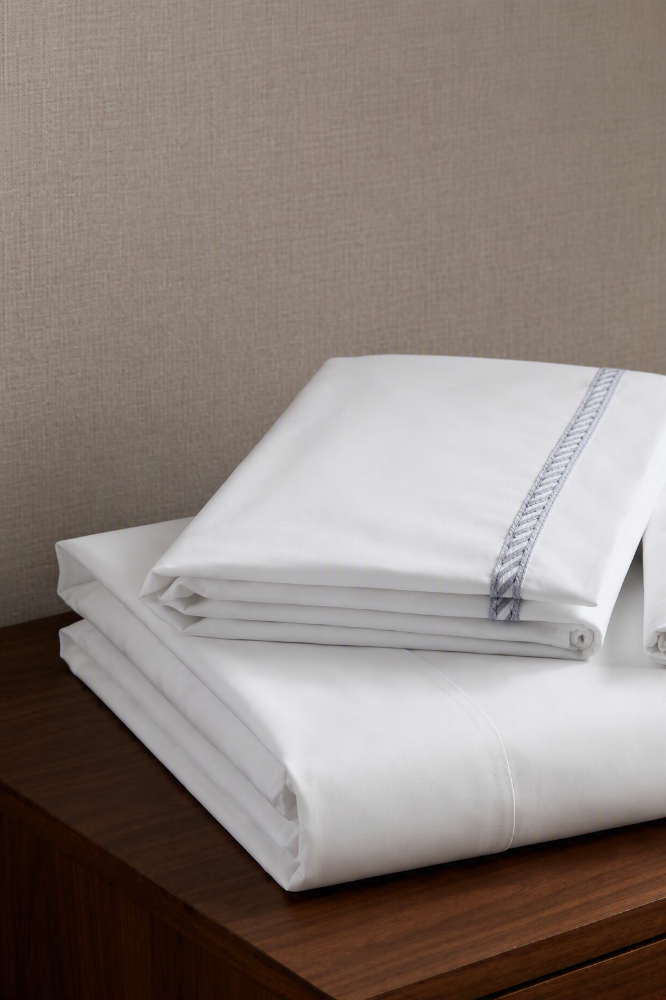
Juego de Sabanas Cuna
70cm X 130cm
Color/Textura: Gris
$2000 MXN
- Confort Suave: Posee un nivel de confort suave al tacto, ideal para proteger la delicada piel del bebé y propiciar un sueño profundo y reparador.
- 100% Algodón de Punto: Confeccionado enteramente en tela de punto de algodón, un material natural, hipoalergénico y altamente transpirable que evita la sudoración.
- Set completo de 3 piezas: Incluye sábana de cajón, sábana plana y una linda funda con vivo gris, ofreciendo una solución práctica, combinable y de diseño tierno.
- Ropa de Cuna: Set especialmente diseñado para vestir la cuna del bebé, garantizándole un espacio acogedor, seguro y limpio para sus horas de sueño.
- Uso diario: Ideal para el descanso cotidiano gracias a su tejido fresco, resistente a las lavadas frecuentes y perfecto para mantener la higiene de la cuna.
- Ajuste perfecto: Con medidas de 70 x 1.30 m. y una sábana de cajón adaptable que se mantiene firmemente fija al colchón para mayor seguridad del bebé.
Descripción detallada: Juego de sábanas para cuna en color blanco con detalle azul a rayas. El set incluye 3 piezas: 1 sábana de cajón, 1 sábana plana y 1 funda con vivo en color gris, diseñadas con una medida de 70 x 1.30 m.
Composición Textil: Tela de Punto 100% Algodón
Instrucciones de Cuidado: Use lavadora en ciclo delicado, con agua fría y jabón neutro.
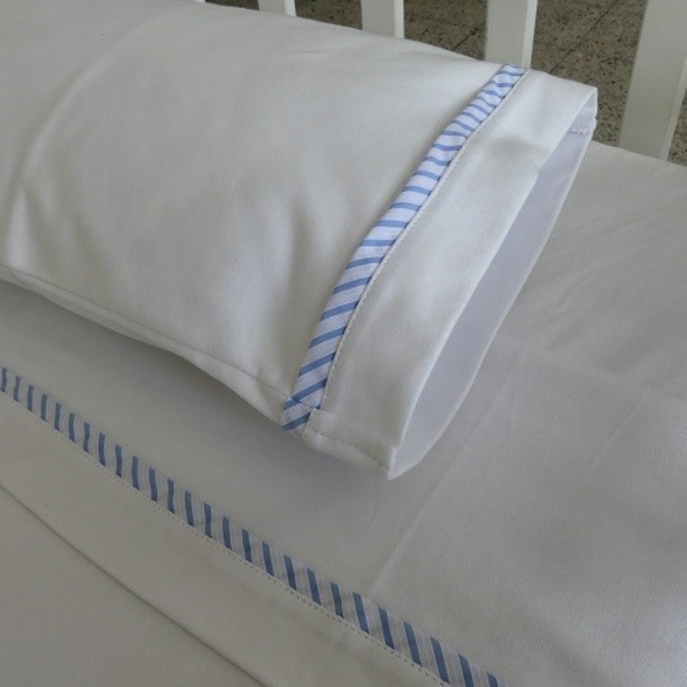
Juego de Sabanas Mini Cuna/Colecho/Moises
Largo 95cm x Ancho 70cm x 08 cm.
Color/Textura: Azul
$750 MXN
- Nivel Suave: Su textura premium brinda un confort suave y terso, cuidando la delicada piel del bebé desde sus primeros meses de vida.
- 100% Algodón Premium: Elaborado enteramente con fibra natural de algodón que favorece una óptima transpiración, manteniendo una temperatura agradable.
- Estilo Tierno y Cohesivo: Luce un distinguido detalle rosa a rayas en la sábana plana y en la funda, aportando un toque decorativo, estético y moderno al dormitorio.
- Multicompatible: Diseñado para adaptarse de forma exacta a distintos espacios de descanso del bebé como Mini Cuna, Colecho, Moisés y cunas tipo Next2me.
- Máximo Ajuste y Seguridad: La sábana de cajón cuenta con elástico a todo el alrededor para un agarre firme al colchón, evitando que se desplace mientras el bebé duerme.
- Sistema Innovador en Sábana Plana: Incorpora un diseño práctico con cajones con resorte en la zona de la piecera para asegurar una mejor sujeción y orden en la cama.
Descripción detallada: Juego de sábanas para Mini Cuna, Colecho, Moisés y Next2me en color blanco con un tierno detalle rosa a rayas. El set de 3 piezas incluye una sábana de cajón, una sábana plana y una funda a juego.
Composición Textil: 100% Algodón (Tela de Punto)
Instrucciones de Cuidado: Use lavadora en ciclo delicado, con agua tibia y jabón neutro. Utilizar blanqueador sin cloro cuando sea necesario. Secar en secadora en ciclo lento a temperatura baja. Plancha tibia si se desea.
Finalizar Compra
🔒 Pago protegido.
Nuestra Comunidad ABeCe
Cada compra nos ayuda a abrazar a quienes más lo necesitan. ¡Síguenos en nuestras redes sociales!